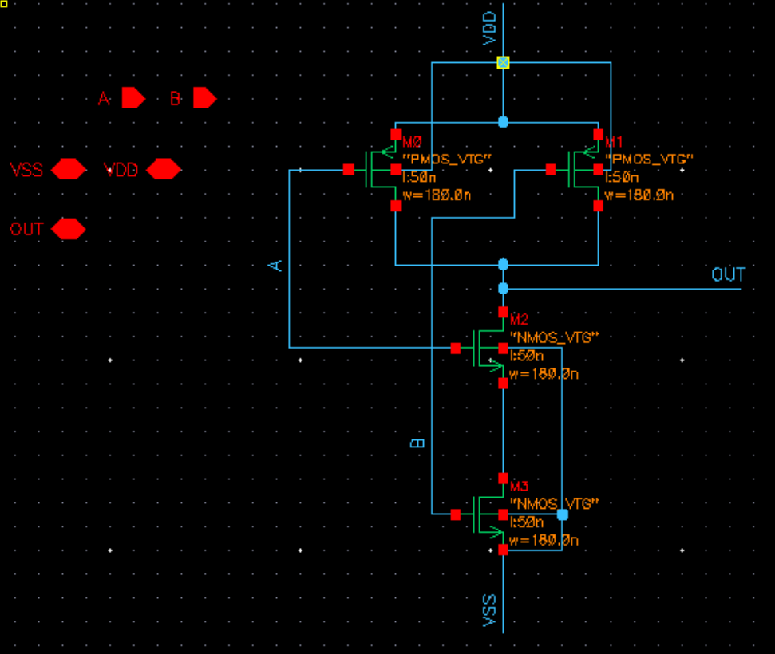
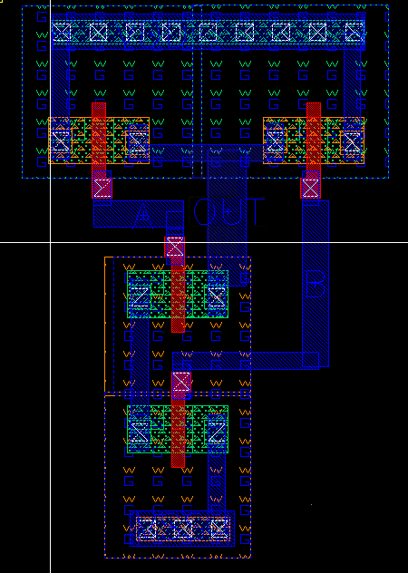
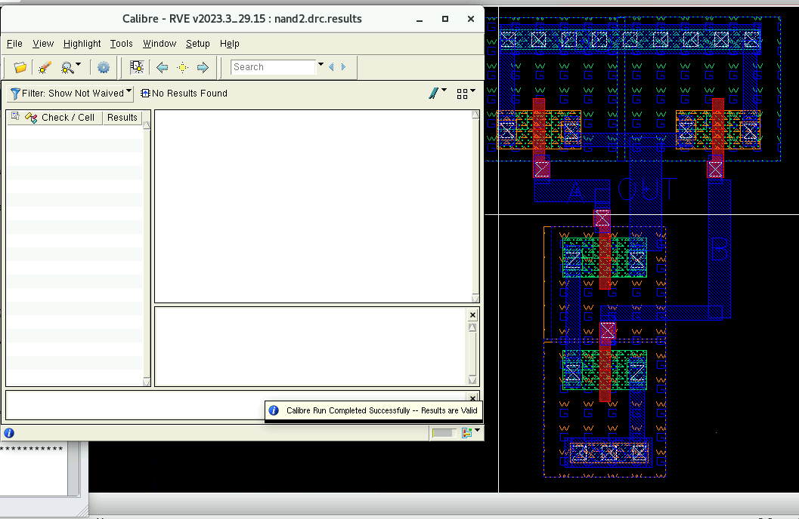
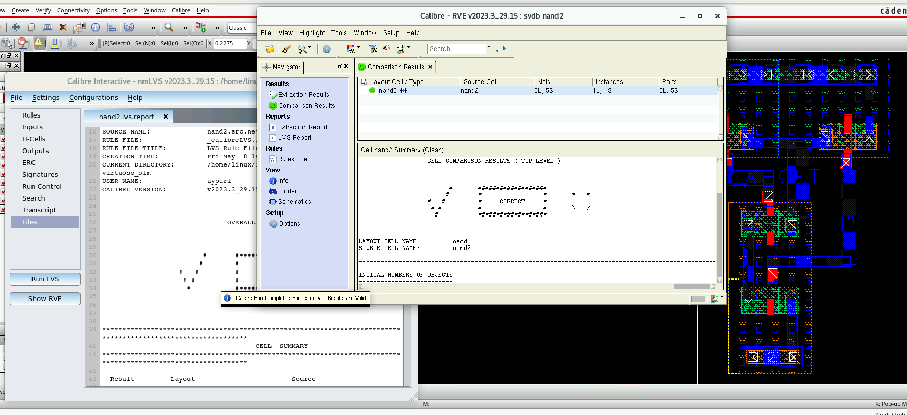
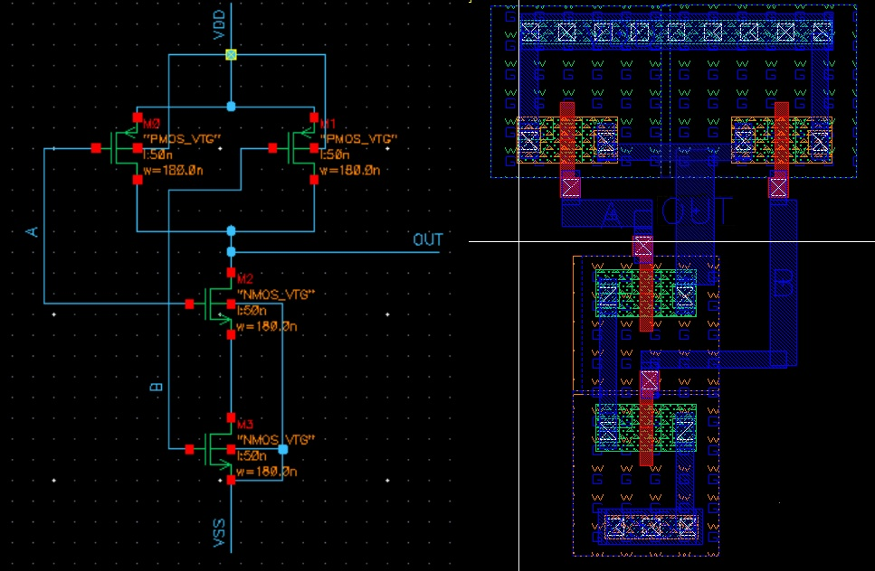

Physical Design · Cadence Virtuoso IC6.1.8
A 2-input CMOS NAND gate designed from transistor sizing through full custom layout, achieving DRC clean and LVS sign-off in Cadence Virtuoso IC6.1.8. The project covers the full physical verification closure loop: schematic entry, layout, rule-deck execution, and iterative debug.

Schematic Entry
2-input NAND gate schematic with PMOS pull-up network and NMOS pull-down stack. Transistors sized to have the equivalent pull up and pull-down resistance to those of the unit-sized inverter.

Full Custom Layout
Layout view showing active, poly, metal, and via layers. This layout separates the PMOS and NMOS networks rather than abutting them, increasing area and intermediate node wire length compared to a standard cell implementation.

DRC Clean
Design Rule Check results showing 0 violations. Iterative debug resolved spacing, enclosure, and minimum width violations across metal and poly layers before reaching clean sign-off.

LVS Sign-off
Layout versus Schematic comparison confirming netlist equivalence. All transistors, connections, and port assignments matched between schematic and extracted layout.

Schematic vs. Layout
Side-by-side comparison of schematic and completed layout, illustrating the correspondence between circuit topology and physical implementation.